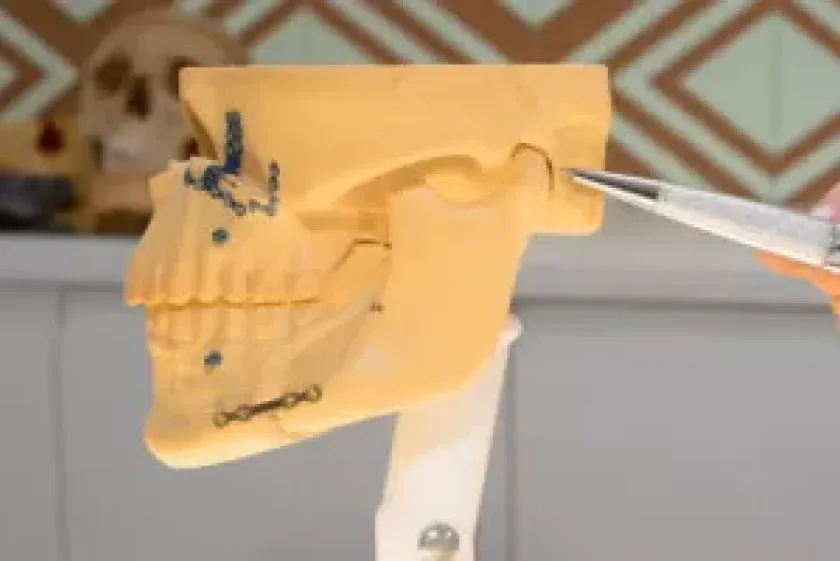

01
Cirurgia Ortognática
Esse procedimento corrige a mordida errada decorrente do crescimento desfavorável dos ossos da face. O tratamento combina ortodontia (aparelho fixo) e cirurgia para devolver função.
Saiba mais pelo WhatsApp →